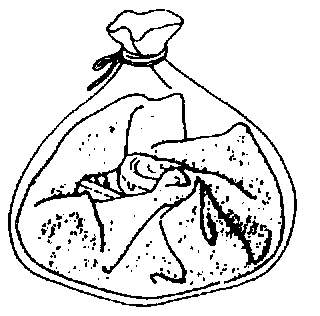

Air Bag Modules Disposal/Handling Procedures
WARNING:* Before scrapping a vehicle with a live (undeployed) air bag module, deploy the air bag module. A live (undeployed) air bag module may deploy by accident, causing injury. Never dispose of a live (undeployed) air bag module.
* The air bag module is very hot immediately after it deploys. You can get burned. Do not touch the air bag module for at least 15 minutes after deployment.
* Pouring water on the deployed air bag module is dangerous. The water will mix with the residual gases to form a gas that can make breathing difficult. Do not pour water on the deployed air bag module.
* The deployed air bag module may contain deposits of sodium hydroxide, a caustic by-product of the gas-generated combustion. If this substance gets In your eyes or on your hands, it can cause irritation and itching. When handling the deployed air bag module, wear gloves and safety glasses.
1. Put on gloves and safety glasses.

2. Put the deployed air bag module in a plastic bag, seal it, and then dispose of it.
3. Wash your hands after removing your gloves.